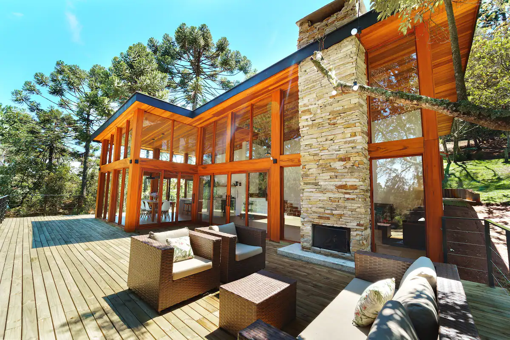
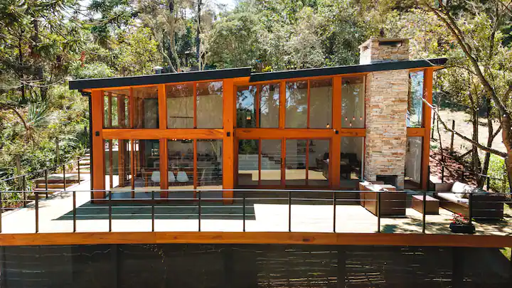
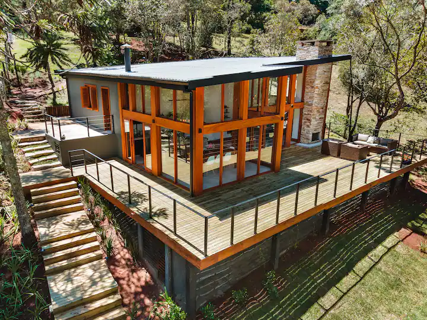
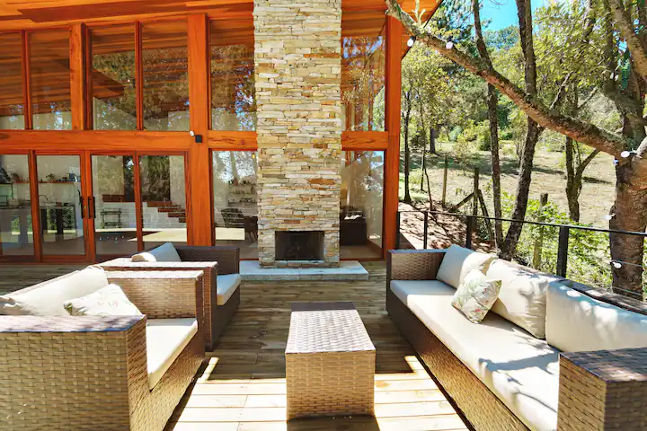
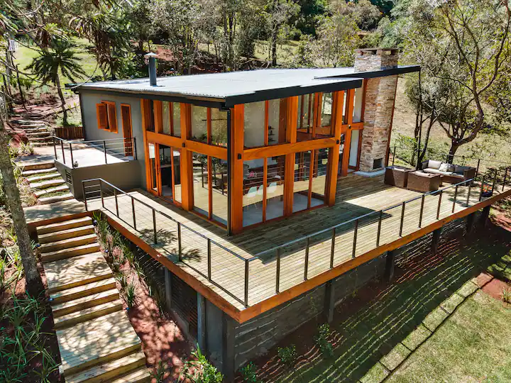
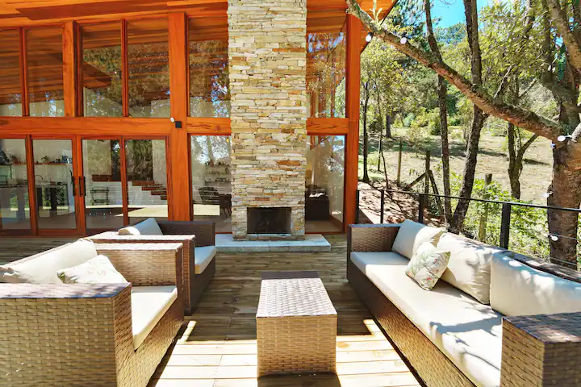
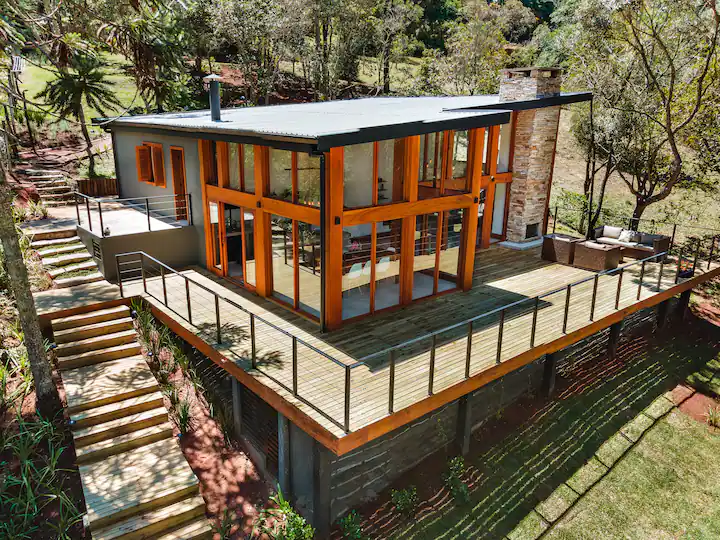
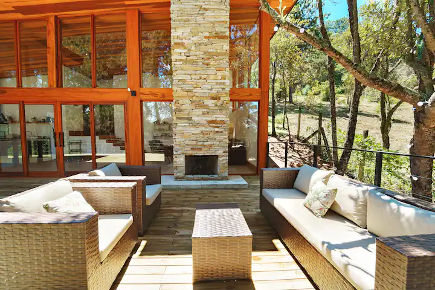

Casa Dois | Contemporânea em Campos do Jordão
4,88 · Parque Imbiry, São Paulo, Brasil


 





Descrição
Sobre este espaço
Casa contemporânea, confortável, na montanha, em loteamento muito arborizado, monitorado por câmeras de
segurança e fechado à noite.
Ideal para 6 pessoas, a casa é um ótimo espaço para curtir a natureza de Campos do Jordão.
A casa fica a 15min de carro do centrinho do Capivari.
O que esse lugar oferece
Cozinha
Estacionamento incluído
Extintor de incêndio
Jogos de tabuleiro
Wi-Fi
HDTV
Lareira interna: a lenha
Kit de primeiros socorros